- Generated on for LOST by
 1.15.0
1.15.0
LOST starting point. More...
Classes | |
| class | AttitudeEstimationAlgorithm |
| An attitude estimation algorithm estimates the orientation of the camera based on identified stars. More... | |
| class | DavenportQAlgorithm |
| A slow but reliable attitude estimation algorithm. More... | |
| class | TriadAlgorithm |
| A fast attitude estimator which only takes into account information from two stars. More... | |
| class | QuestAlgorithm |
| A faster and just as accurate attitude estimator as the Davenport Q algorithm. More... | |
| struct | Vec2 |
| A two dimensional vector with decimaling point components. More... | |
| class | Vec3 |
| Three dimensional vector with decimaling point components. More... | |
| class | Mat3 |
| 3x3 vector with decimaling point components More... | |
| class | EulerAngles |
| A "human-readable" way to represent a 3d rotation or orientation. More... | |
| class | Quaternion |
| A quaternion is a common way to represent a 3d rotation. More... | |
| class | Attitude |
| The attitude (orientation) of a spacecraft. More... | |
| class | Camera |
| A full description of a camera. Enough information to reconstruct the camera matrix and then some. More... | |
| struct | CentroidParams |
| struct | IWCoGParams |
| class | CentroidAlgorithm |
| An algorithm that detects the (x,y) coordinates of bright points in an image, called "centroids". More... | |
| class | DummyCentroidAlgorithm |
| A centroid algorithm for debugging that returns random centroids. More... | |
| class | CenterOfGravityAlgorithm |
| A simple, fast, and pretty decent centroid algorithm. More... | |
| class | IterativeWeightedCenterOfGravityAlgorithm |
| A more complicated centroid algorithm which doesn't perform much better than CenterOfGravityAlgorithm. More... | |
| struct | KVectorPair |
| class | KVectorIndex |
| A data structure enabling constant-time range queries into fixed numerical data. More... | |
| class | PairDistanceKVectorDatabase |
| A database storing distances between pairs of stars. More... | |
| class | MultiDatabase |
| class | MultiDatabaseEntry |
| class | GeneratedStar |
| A star used in simulated image generation. Contains extra data about how to simulate the star. More... | |
| class | CentroidComparison |
| The result of comparing actual and expected centroids Used for debugging and benchmarking. More... | |
| class | UserSpecifiedOutputStream |
| An output stream which might be a file or stdout. More... | |
| class | Image |
| An 8-bit grayscale 2d image. More... | |
| class | PipelineOptions |
| The command line options passed when running a pipeline. More... | |
| class | PipelineInput |
| Represents the input and expected outputs of a pipeline run. More... | |
| class | GeneratedPipelineInput |
| A pipeline input which is generated (fake image). More... | |
| class | PngPipelineInput |
| A pipeline input created by reading a PNG from a file on disk. More... | |
| struct | PipelineOutput |
| The result of running a pipeline. More... | |
| struct | StarIdComparison |
| The result of comparing an actual star identification with the true star idenification, used for testing and benchmarking. More... | |
| class | Pipeline |
| A set of algorithms that describes all or part of the star-tracking "pipeline". More... | |
| class | DatabaseOptions |
| Commannd line options when using the database command. More... | |
| class | SerializeContext |
| class | DeserializeContext |
| class | IRUnidentifiedCentroid |
| unidentified centroid used in IdentifyRemainingStarsPairDistance The "angles" through here are "triangular angles". More... | |
| class | PairDistanceInvolvingIterator |
| Given a list of star pairs, finds all those pairs which involve a certain star. More... | |
| class | StarIdAlgorithm |
| A star idenification algorithm. More... | |
| class | DummyStarIdAlgorithm |
| A star-id algorithm that returns random results. For debugging. More... | |
| class | GeometricVotingStarIdAlgorithm |
| A star-id algorithm based on assigning votes for each centroid-catalog pair then choosing the highest voted catalog stars. More... | |
| class | PyramidStarIdAlgorithm |
| The "de facto" star-id algorithm used in many real-world missions. More... | |
| class | CatalogStar |
| A star from the Bright Star Catalog. More... | |
| class | Star |
| A "centroid" detected in an image. More... | |
| class | StarIdentifier |
| Records that a certain Star (detected in the image) corresponds to a certain CatalogStar. More... | |
Typedefs | |
| typedef std::vector< MultiDatabaseEntry > | MultiDatabaseDescriptor |
| typedef CentroidAlgorithm *(* | CentroidAlgorithmFactory) () |
| typedef StarIdAlgorithm *(* | StarIdAlgorithmFactory) () |
| typedef AttitudeEstimationAlgorithm *(* | AttitudeEstimationAlgorithmFactory) () |
| typedef PipelineInputList(* | PipelineInputFactory) () |
| typedef void(* | PipelineComparator) (std::ostream &os, const PipelineInputList &, const std::vector< PipelineOutput > &, const PipelineOptions &) |
| typedef std::vector< std::unique_ptr< PipelineInput > > | PipelineInputList |
| typedef std::vector< CatalogStar > | Catalog |
| typedef std::vector< Star > | Stars |
| typedef std::vector< StarIdentifier > | StarIdentifiers |
Functions | |
| decimal | QuestCharPoly (decimal x, decimal a, decimal b, decimal c, decimal d, decimal s) |
| Characteristic polynomial of the quest K-matrix. | |
| decimal | QuestCharPolyPrime (decimal x, decimal a, decimal b, decimal c) |
| Derivitive of the characteristic polynomial of the quest K-matrix. | |
| decimal | QuestEigenvalueEstimator (decimal guess, decimal a, decimal b, decimal c, decimal d, decimal s) |
| Approximates roots of a real function using the Newton-Raphson algorithm. | |
| Quaternion | SphericalToQuaternion (decimal ra, decimal dec, decimal roll) |
| Return a quaternion that will reorient the coordinate axes so that the x-axis points at the given right ascension and declination, then roll the coordinate axes counterclockwise (i.e., the stars will appear to rotate clockwise). | |
| Vec3 | SphericalToSpatial (decimal ra, decimal de) |
| Convert from right ascension & declination to a 3d point on the unit sphere. | |
| void | SpatialToSpherical (const Vec3 &vec, decimal *ra, decimal *de) |
| Convert from a 3d point on the unit sphere to right ascension & declination. | |
| decimal | RadToDeg (decimal rad) |
| decimal | DegToRad (decimal deg) |
| decimal | RadToArcSec (decimal rad) |
| decimal | ArcSecToRad (decimal arcSec) |
| decimal | DecimalModulo (decimal x, decimal mod) |
| Given a decimal, find it "modulo" another decimal, in the true mathematical sense (not remainder). | |
| Mat3 | QuaternionToDCM (const Quaternion &quat) |
| Convert a quaternion to a rotation matrix (Direction Cosine Matrix). | |
| Quaternion | DCMToQuaternion (const Mat3 &dcm) |
| Convert a rotation matrix (Direction Cosine Matrix) to a quaternion representing the same rotation. | |
| void | SerializeVec3 (SerializeContext *ser, const Vec3 &vec) |
| Serialize a Vec3 to buffer. Takes up space according to SerializeLengthVec3. | |
| Vec3 | DeserializeVec3 (DeserializeContext *des) |
| decimal | Angle (const Vec3 &vec1, const Vec3 &vec2) |
| Calculate the inner angle, in radians, between two vectors. | |
| decimal | AngleUnit (const Vec3 &vec1, const Vec3 &vec2) |
| Calculate the inner angle, in radians, between two /unit/ vectors. | |
| decimal | Distance (const Vec2 &, const Vec2 &) |
| decimal | Distance (const Vec3 &, const Vec3 &) |
| decimal | FovToFocalLength (decimal xFov, decimal xResolution) |
| decimal | FocalLengthToFov (decimal focalLength, decimal xResolution, decimal pixelSize) |
| int | BadThreshold (unsigned char *image, int imageWidth, int imageHeight) |
| int | OtsusThreshold (unsigned char *image, int imageWidth, int imageHeight) |
| int | BasicThreshold (unsigned char *image, int imageWidth, int imageHeight) |
| int | BasicThresholdOnePass (unsigned char *image, int imageWidth, int imageHeight) |
| void | IWCoGHelper (IWCoGParams *p, long i, unsigned char *image, int imageWidth, int imageHeight, std::vector< int > *starIndices) |
| bool | isFlagSet (uint32_t dbFlags, uint32_t flag) |
| bool | CompareKVectorPairs (const KVectorPair &p1, const KVectorPair &p2) |
| void | SerializeKVectorIndex (SerializeContext *ser, const std::vector< decimal > &values, decimal min, decimal max, long numBins) |
| K-vector index layout. | |
| std::vector< KVectorPair > | CatalogToPairDistances (const Catalog &catalog, decimal minDistance, decimal maxDistance) |
| pair K-vector database layout. | |
| void | SerializePairDistanceKVector (SerializeContext *ser, const Catalog &catalog, decimal minDistance, decimal maxDistance, long numBins) |
| Serialize a pair-distance KVector into buffer. | |
| decimal | Clamp (decimal num, decimal low, decimal high) |
| Return the value in the range [low,high] which is closest to num. | |
| void | SerializeMultiDatabase (SerializeContext *ser, const MultiDatabaseDescriptor &dbs, uint32_t flags) |
| std::vector< CatalogStar > | BscParse (std::string tsvPath) |
| Parse the bright star catalog from the TSV file on disk. | |
| const Catalog & | CatalogRead () |
| Read and parse the full catalog from disk. If called multiple times, will re-use the first result. | |
| unsigned char * | SurfaceToGrayscaleImage (cairo_surface_t *cairoSurface) |
| Convert a colored Cairo image surface into a row-major array of grayscale pixels. | |
| cairo_surface_t * | GrayscaleImageToSurface (const unsigned char *image, const int width, const int height) |
| void | SurfacePlot (std::string description, cairo_surface_t *cairoSurface, const Stars &stars, const StarIdentifiers *starIds, const Catalog *catalog, const Attitude *attitude, double red, double green, double blue, double alpha, bool rawStarIndexes=false) |
| Plot information about an image onto the image using Cairo. | |
| SerializeContext | serFromDbValues (const DatabaseOptions &values) |
| MultiDatabaseDescriptor | GenerateDatabases (const Catalog &, const DatabaseOptions &values) |
| Appropriately create descriptors for all requested databases according to command-line options. | |
| std::ostream & | operator<< (std::ostream &os, const Camera &camera) |
| Print information about the camera in machine and human-readable form. | |
| decimal | FocalLengthFromOptions (const PipelineOptions &values, int xResolution) |
| Calculate the focal length, in pixels, based on the given command line options. | |
| PipelineInputList | GetPngPipelineInput (const PipelineOptions &values) |
| Create a PngPipelineInput using command line options. | |
| PipelineInputList | GetGeneratedPipelineInput (const PipelineOptions &values) |
| Create a GeneratedPipelineInput based on the command line options in values. | |
| PipelineInputList | GetPipelineInput (const PipelineOptions &values) |
| Come up with a list of pipeline inputs based on command line options. | |
| Pipeline | SetPipeline (const PipelineOptions &values) |
| Create a pipeline from command line options. | |
| CentroidComparison | CentroidsCompare (decimal threshold, const Stars &expected, const Stars &actual) |
| Compare expected and actual centroids. | |
| CentroidComparison | CentroidComparisonsCombine (std::vector< CentroidComparison > comparisons) |
| StarIdComparison | StarIdsCompare (const StarIdentifiers &expected, const StarIdentifiers &actual, const Catalog &expectedCatalog, const Catalog &actualCatalog, decimal centroidThreshold, const Stars &expectedStars, const Stars &inputStars) |
| Compare expected and actual star identifications. | |
| void | PipelineComparatorPlotCentroidIndices (std::ostream &os, const PipelineInputList &expected, const std::vector< PipelineOutput > &actual, const PipelineOptions &) |
| Plot an annotated image where centroids are annotated with their centroid index. | |
| void | PipelineComparison (const PipelineInputList &expected, const std::vector< PipelineOutput > &actual, const PipelineOptions &values) |
| Print or otherwise analyze the results of (perhaps multiple) runs of a star tracking pipeline. | |
| void | InspectCatalog () |
| bool | atobool (const char *cstr) |
| Convert string to boolean. | |
| template<typename T> | |
| void | SwapEndianness (unsigned char *buffer) |
| Unconditionally swap the endianness of a value (uses sizeof T). | |
| template<typename T> | |
| void | SwapEndiannessIfNecessary (unsigned char *buffer, SerializeContext *ser) |
| Swap the endianness of a value if necessary. | |
| template<> | |
| void | SwapEndiannessIfNecessary< decimal > (unsigned char *buffer, SerializeContext *ser) |
| template<typename T> | |
| void | DeserializePadding (DeserializeContext *des) |
| Move the cursor forward past any padding that would appear before a value of type T. | |
| template<typename T> | |
| T | DeserializePrimitive (DeserializeContext *des) |
| template<typename T> | |
| const T * | DeserializeArray (DeserializeContext *des, long arrLength) |
| return an array of items as a pointer. Will point into the buffer (mmap style). | |
| template<typename T> | |
| void | SerializePadding (SerializeContext *ser) |
| template<typename T> | |
| void | SerializePrimitive (SerializeContext *ser, const T &val) |
| std::vector< int16_t > | IdentifyThirdStar (const PairDistanceKVectorDatabase &db, const Catalog &catalog, int16_t catalogIndex1, int16_t catalogIndex2, decimal distance1, decimal distance2, decimal tolerance) |
| Given two already-identified centroids, and the distance from each to an as-yet unidentified third centroid, return a list of candidate catalog stars that could be the third centroid. | |
| int | IdentifyRemainingStarsPairDistance (StarIdentifiers *identifiers, const Stars &stars, const PairDistanceKVectorDatabase &db, const Catalog &catalog, const Camera &camera, decimal tolerance) |
| Given some identified stars, attempt to identify the rest. | |
| std::vector< int16_t > | ConsumeInvolvingIterator (PairDistanceInvolvingIterator it) |
| std::unordered_multimap< int16_t, int16_t > | PairDistanceQueryToMap (const int16_t *pairs, const int16_t *end) |
| Given the result of a pair-distance kvector query, build a hashmultimap of stars to other stars that appeared with it in the query. | |
| std::vector< std::vector< IRUnidentifiedCentroid * >::iterator > | FindUnidentifiedCentroidsInRange (std::vector< IRUnidentifiedCentroid * > *centroids, const Star &star, const Camera &camera, decimal minDistance, decimal maxDistance) |
| Return all the unidentified centroids within the requested distance bounds from star. | |
| void | AddToAllUnidentifiedCentroids (const StarIdentifier &starId, const Stars &stars, std::vector< IRUnidentifiedCentroid * > *aboveThresholdCentroids, std::vector< IRUnidentifiedCentroid * > *belowThresholdCentroids, decimal minDistance, decimal maxDistance, decimal angleFrom90Threshold, const Camera &camera) |
| Given a list of unidentified centroids not yet at the soft threshold, and a list of unidentified centroids already below the soft threshold, appropriately add the given centroid to all the unidentified centroids still above the threshold, and perhaps move them to the below threshold list. | |
| IRUnidentifiedCentroid * | SelectNextUnidentifiedCentroid (std::vector< IRUnidentifiedCentroid * > *aboveThresholdCentroids, std::vector< IRUnidentifiedCentroid * > *belowThresholdCentroids) |
| bool | CatalogStarMagnitudeCompare (const CatalogStar &a, const CatalogStar &b) |
| Catalog | NarrowCatalog (const Catalog &, int maxMagnitude, int maxStars, decimal minSeparation) |
| Remove unwanted stars from an unfiltered catalog. | |
| Catalog::const_iterator | FindNamedStar (const Catalog &catalog, int name) |
| Return a pointer to the star with the given name, or NULL if not found. | |
| void | SerializeCatalogStar (SerializeContext *ser, const CatalogStar &catalogStar, bool inclMagnitude, bool inclName) |
| Serialize a CatalogStar into a byte buffer. | |
| CatalogStar | DeserializeCatalogStar (DeserializeContext *des, bool inclMagnitude, bool inclName) |
| Deserialize a catalog star. | |
| void | SerializeCatalog (SerializeContext *ser, const Catalog &catalog, bool inclMagnitude, bool inclName) |
| Serialize the catalog to buffer. | |
| Catalog | DeserializeCatalog (DeserializeContext *des, bool *inclMagnitudeReturn, bool *inclNameReturn) |
| Deserialize a catalog. | |
| decimal | MagToBrightness (int magnitude) |
| returns some relative brightness measure, which is proportional to the total number of photons received from a star. | |
Variables | |
| const Mat3 | kIdentityMat3 |
| 3x3 identity matrix | |
| decimal | iWCoGMinChange = DECIMAL(0.0002) |
| const int32_t | kCatalogMagicValue = 0xF9A283BC |
| const int | kMaxBrightness = 255 |
| const char | kNoDefaultArgument = 0 |
| const decimal | kAngleFrom90SoftThreshold = DECIMAL_M_PI_4 |
LOST starting point.
Helpers to serialize and deserialize arbitrary data types to disk.
Reads in CLI arguments/flags and starts the appropriate pipelines
The serialization and deserialization helpers here assume that (a) integers and decimal point numbers are stored in the same format on the source and target systems except for endianness, and (b) the target system requires no greater than n-byte alignment for n-byte values (eg, an int32_t only needs 4-byte alignment, not 8-byte), and (c) the database itself will be aligned at a multiple of the largest size of any value stored within (because we only align values relative to the start of the database, so everything breaks if the database itself is misaligned).
Generally, the "bulk" of any database will not be explicitly deserialized into a data structure in memory, but instead will just effectively memory-mapped, by just storing a pointer to a certain offset into the database. The serialization functions in this file can still be used to create such a "bulk" section, but deserialization must be handled manually.
| typedef AttitudeEstimationAlgorithm *(* lost::AttitudeEstimationAlgorithmFactory)() |
| typedef std::vector<CatalogStar> lost::Catalog |
Definition at line 100 of file star-utils.hpp.
| typedef CentroidAlgorithm *(* lost::CentroidAlgorithmFactory) () |
| typedef std::vector<MultiDatabaseEntry> lost::MultiDatabaseDescriptor |
Definition at line 123 of file databases.hpp.
| typedef void(* lost::PipelineComparator) (std::ostream &os, const PipelineInputList &, const std::vector< PipelineOutput > &, const PipelineOptions &) |
| typedef PipelineInputList(* lost::PipelineInputFactory) () |
| typedef std::vector<std::unique_ptr<PipelineInput> > lost::PipelineInputList |
| typedef StarIdAlgorithm *(* lost::StarIdAlgorithmFactory)() |
| typedef std::vector<StarIdentifier> lost::StarIdentifiers |
Definition at line 102 of file star-utils.hpp.
| typedef std::vector<Star> lost::Stars |
Definition at line 101 of file star-utils.hpp.
| void lost::AddToAllUnidentifiedCentroids | ( | const StarIdentifier & | starId, |
| const Stars & | stars, | ||
| std::vector< IRUnidentifiedCentroid * > * | aboveThresholdCentroids, | ||
| std::vector< IRUnidentifiedCentroid * > * | belowThresholdCentroids, | ||
| decimal | minDistance, | ||
| decimal | maxDistance, | ||
| decimal | angleFrom90Threshold, | ||
| const Camera & | camera ) |
Given a list of unidentified centroids not yet at the soft threshold, and a list of unidentified centroids already below the soft threshold, appropriately add the given centroid to all the unidentified centroids still above the threshold, and perhaps move them to the below threshold list.
| angleFrom90Threshold | Once an IRUnidentifiedCentroid's best angle from 90 goes below this threshold |
Definition at line 352 of file star-id.cpp.
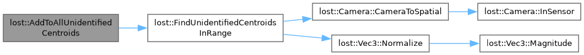
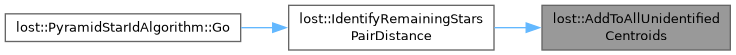
Calculate the inner angle, in radians, between two vectors.
angle between two vectors, using dot product and magnitude division
Definition at line 470 of file attitude-utils.cpp.
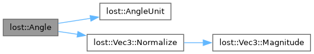
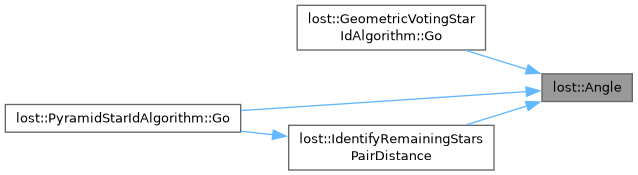
Calculate the inner angle, in radians, between two /unit/ vectors.
angle between two vectors, /assuming/ that they are already unit length
Slightly faster than Angle() @warn If the vectors are not already unit vectors, will return the wrong result!
Definition at line 479 of file attitude-utils.cpp.
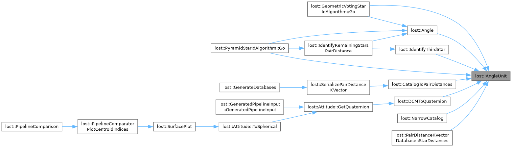
Definition at line 164 of file attitude-utils.cpp.
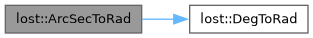
| bool lost::atobool | ( | const char * | cstr | ) |
| int lost::BadThreshold | ( | unsigned char * | image, |
| int | imageWidth, | ||
| int | imageHeight ) |
Definition at line 29 of file centroiders.cpp.
| int lost::BasicThreshold | ( | unsigned char * | image, |
| int | imageWidth, | ||
| int | imageHeight ) |
Definition at line 79 of file centroiders.cpp.
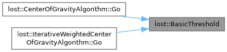
| int lost::BasicThresholdOnePass | ( | unsigned char * | image, |
| int | imageWidth, | ||
| int | imageHeight ) |
Definition at line 95 of file centroiders.cpp.
| std::vector< CatalogStar > lost::BscParse | ( | std::string | tsvPath | ) |
| const Catalog & lost::CatalogRead | ( | ) |
| bool lost::CatalogStarMagnitudeCompare | ( | const CatalogStar & | a, |
| const CatalogStar & | b ) |
Definition at line 13 of file star-utils.cpp.
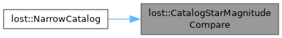
| std::vector< KVectorPair > lost::CatalogToPairDistances | ( | const Catalog & | catalog, |
| decimal | minDistance, | ||
| decimal | maxDistance ) |
pair K-vector database layout.
The kvector appears before the bulk pair data because it contains the number of pairs, which is necessary to read the bulk pair data.
| size (bytes) | name | description | |--------------------------+--------------+-------------------------------------------------------------| | sizeof kvectorIndex | kVectorIndex | Serialized KVector index | | 2*sizeof(int16)*numPairs | pairs | Bulk pair data |
Definition at line 175 of file databases.cpp.
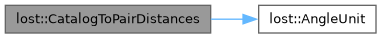
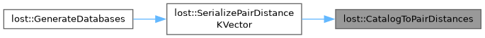
| CentroidComparison lost::CentroidComparisonsCombine | ( | std::vector< CentroidComparison > | comparisons | ) |
| CentroidComparison lost::CentroidsCompare | ( | decimal | threshold, |
| const Stars & | expected, | ||
| const Stars & | actual ) |
Return the value in the range [low,high] which is closest to num.
Definition at line 228 of file databases.cpp.
| bool lost::CompareKVectorPairs | ( | const KVectorPair & | p1, |
| const KVectorPair & | p2 ) |
Definition at line 29 of file databases.cpp.
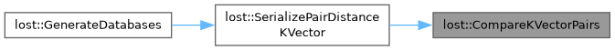
| std::vector< int16_t > lost::ConsumeInvolvingIterator | ( | PairDistanceInvolvingIterator | it | ) |
| Quaternion lost::DCMToQuaternion | ( | const Mat3 & | dcm | ) |
Convert a rotation matrix (Direction Cosine Matrix) to a quaternion representing the same rotation.
Definition at line 367 of file attitude-utils.cpp.
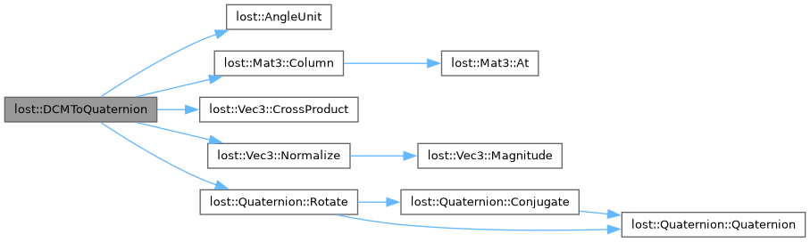
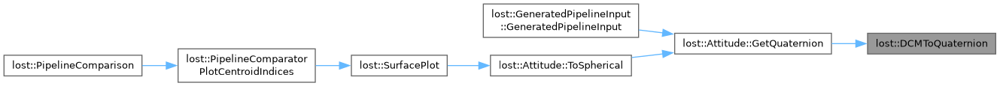
Given a decimal, find it "modulo" another decimal, in the true mathematical sense (not remainder).
Always returns something in [0,mod) Eg -0.8 mod 0.6 = 0.4
Definition at line 168 of file attitude-utils.cpp.
Definition at line 156 of file attitude-utils.cpp.
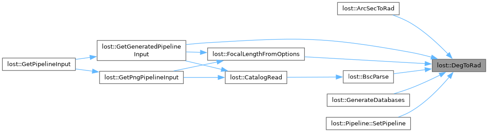
| const T * lost::DeserializeArray | ( | DeserializeContext * | des, |
| long | arrLength ) |
return an array of items as a pointer. Will point into the buffer (mmap style).
Definition at line 105 of file serialize-helpers.hpp.
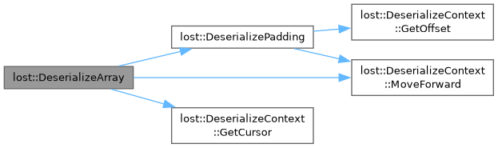
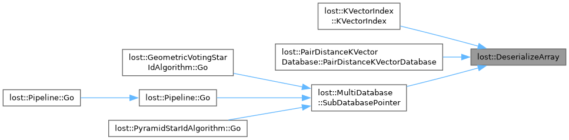
| Catalog lost::DeserializeCatalog | ( | DeserializeContext * | des, |
| bool * | inclMagnitudeReturn, | ||
| bool * | inclNameReturn ) |
Deserialize a catalog.
| [out] | inclMagnitudeReturn,inclNameReturn | Will store whether inclMagnitude and inclNameReturn were set in the corresponding SerializeCatalog() call. |
Definition at line 123 of file star-utils.cpp.
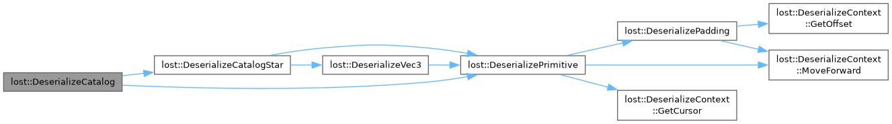
| CatalogStar lost::DeserializeCatalogStar | ( | DeserializeContext * | des, |
| bool | inclMagnitude, | ||
| bool | inclName ) |
Deserialize a catalog star.
@warn The inclMagnitude and inclName parameters must be the same as passed to SerializeCatalogStar()
Definition at line 86 of file star-utils.cpp.
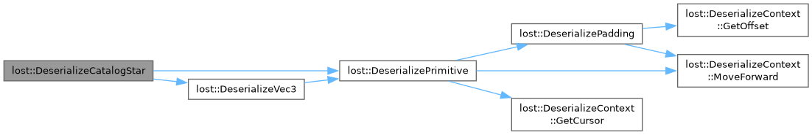
| void lost::DeserializePadding | ( | DeserializeContext * | des | ) |
Move the cursor forward past any padding that would appear before a value of type T.
Definition at line 91 of file serialize-helpers.hpp.
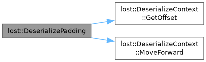
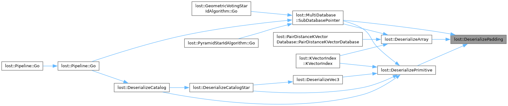
| T lost::DeserializePrimitive | ( | DeserializeContext * | des | ) |
Definition at line 96 of file serialize-helpers.hpp.
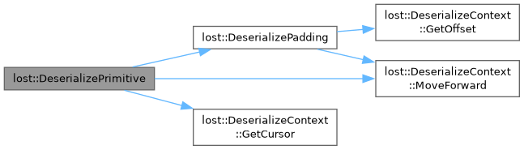
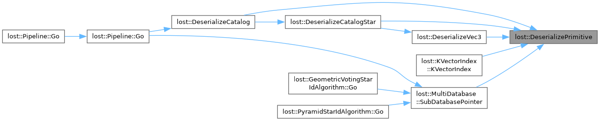
| Vec3 lost::DeserializeVec3 | ( | DeserializeContext * | des | ) |
Definition at line 460 of file attitude-utils.cpp.
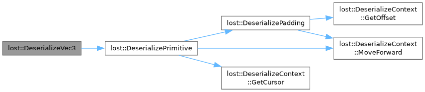
| Catalog::const_iterator lost::FindNamedStar | ( | const Catalog & | catalog, |
| int | name ) |
Return a pointer to the star with the given name, or NULL if not found.
Definition at line 54 of file star-utils.cpp.
| std::vector< std::vector< IRUnidentifiedCentroid * >::iterator > lost::FindUnidentifiedCentroidsInRange | ( | std::vector< IRUnidentifiedCentroid * > * | centroids, |
| const Star & | star, | ||
| const Camera & | camera, | ||
| decimal | minDistance, | ||
| decimal | maxDistance ) |
Return all the unidentified centroids within the requested distance bounds from star.
The returned vector has pointers into the vector passed as an argument. Thus, it's important not to modify the centroids argument after calling.
Definition at line 301 of file star-id.cpp.
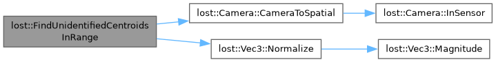
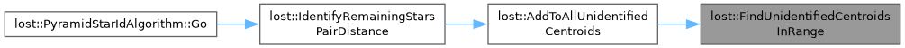
| decimal lost::FocalLengthFromOptions | ( | const PipelineOptions & | values, |
| int | xResolution ) |
Calculate the focal length, in pixels, based on the given command line options.
This function exists because there are two ways to specify how "zoomed-in" the camera is. One way is using just FOV, which is useful when generating false images. Another is a combination of pixel size and focal length, which is useful for physical cameras.
Definition at line 320 of file io.cpp.
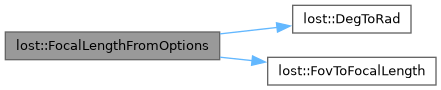
| MultiDatabaseDescriptor lost::GenerateDatabases | ( | const Catalog & | , |
| const DatabaseOptions & | values ) |
Appropriately create descriptors for all requested databases according to command-line options.
Definition at line 281 of file io.cpp.
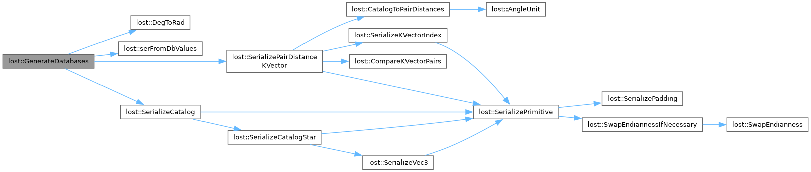
| PipelineInputList lost::GetGeneratedPipelineInput | ( | const PipelineOptions & | values | ) |
Create a GeneratedPipelineInput based on the command line options in values.
Definition at line 735 of file io.cpp.
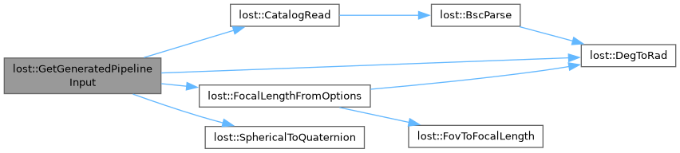
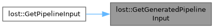
| PipelineInputList lost::GetPipelineInput | ( | const PipelineOptions & | values | ) |
| PipelineInputList lost::GetPngPipelineInput | ( | const PipelineOptions & | values | ) |
Create a PngPipelineInput using command line options.
Definition at line 380 of file io.cpp.
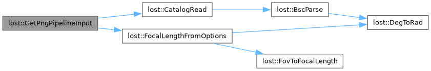
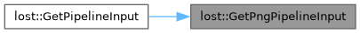
| cairo_surface_t * lost::GrayscaleImageToSurface | ( | const unsigned char * | image, |
| const int | width, | ||
| const int | height ) |
| int lost::IdentifyRemainingStarsPairDistance | ( | StarIdentifiers * | identifiers, |
| const Stars & | stars, | ||
| const PairDistanceKVectorDatabase & | db, | ||
| const Catalog & | catalog, | ||
| const Camera & | camera, | ||
| decimal | tolerance ) |
Given some identified stars, attempt to identify the rest.
Requires a pair distance database to be present. Iterates through the unidentified centroids in an intelligent order, identifying them one by one.
Definition at line 463 of file star-id.cpp.
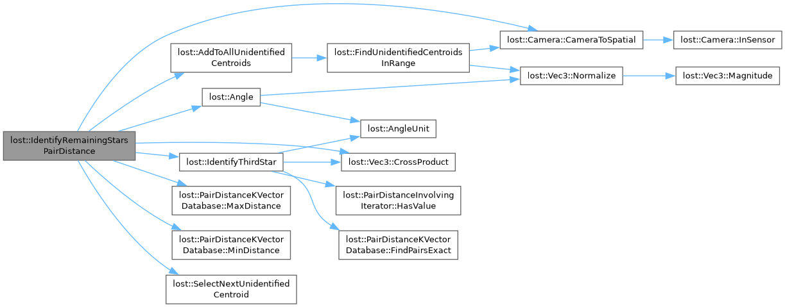
| std::vector< int16_t > lost::IdentifyThirdStar | ( | const PairDistanceKVectorDatabase & | db, |
| const Catalog & | catalog, | ||
| int16_t | catalogIndex1, | ||
| int16_t | catalogIndex2, | ||
| decimal | distance1, | ||
| decimal | distance2, | ||
| decimal | tolerance ) |
Given two already-identified centroids, and the distance from each to an as-yet unidentified third centroid, return a list of candidate catalog stars that could be the third centroid.
The order in which the two centroids are passed in /does/ matter wrt spectral-ness. If the first supplied catalog star is a, second is b, and the unidentified is c, then (a crossproduct b) dot c will be positive for all returned c. Intuitively, if the triangle is fairly small on the surface of the sphere, then viewed from the origin, the vertices a, b, and c should be clockwise (then, the cross product of a and b will point mostly towards c, and a little outwards, so that dot product with c captures that positive outward part).
Definition at line 386 of file star-id.cpp.
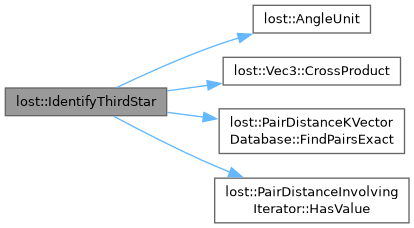
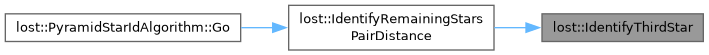
| void lost::InspectCatalog | ( | ) |
|
inline |
Definition at line 19 of file databases.cpp.
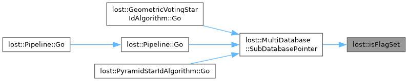
| void lost::IWCoGHelper | ( | IWCoGParams * | p, |
| long | i, | ||
| unsigned char * | image, | ||
| int | imageWidth, | ||
| int | imageHeight, | ||
| std::vector< int > * | starIndices ) |
Definition at line 197 of file centroiders.cpp.
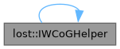
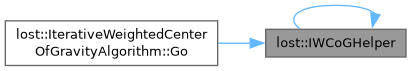
| decimal lost::MagToBrightness | ( | int | magnitude | ) |
returns some relative brightness measure, which is proportional to the total number of photons received from a star.
As always, the magnitude is actually 100* the usual magnitude
Definition at line 147 of file star-utils.cpp.
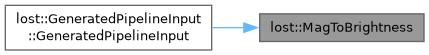
| Catalog lost::NarrowCatalog | ( | const Catalog & | , |
| int | maxMagnitude, | ||
| int | maxStars, | ||
| decimal | minSeparation ) |
Remove unwanted stars from an unfiltered catalog.
TODO: Don't necessarily remove both stars when they're within minSeparation. Instead, if the brightnesses are different enough, just keep the brightest one!
| maxMagnitude | Should be 100*(magnitude), just like CatalogStar::magnitude. The narrowed catalog will only contain stars at least as bright as that (i.e., lower magnitude). Pass something like 9999 to not filter based on magnitude. |
| maxStars | No more than maxStars many stars will be in the narrowed catalog (prefers brightest). Pass something like 99999 to not filter maxStars. |
| minDistance | Any star which is within minDistance of another star is removed from the catalog. Pass something like -1 to not filter based on minDistance. TODO: In the future, some provision may be made so that instead of being removed, these stars get a special distinguishing mark, so that star-id algorithms can reason about them instead of thinking they are false stars, but no such provision is made yet. |
Definition at line 17 of file star-utils.cpp.
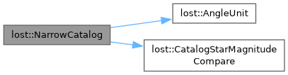
| std::ostream & lost::operator<< | ( | std::ostream & | os, |
| const Camera & | camera ) |
| int lost::OtsusThreshold | ( | unsigned char * | image, |
| int | imageWidth, | ||
| int | imageHeight ) |
Definition at line 39 of file centroiders.cpp.
| std::unordered_multimap< int16_t, int16_t > lost::PairDistanceQueryToMap | ( | const int16_t * | pairs, |
| const int16_t * | end ) |
Given the result of a pair-distance kvector query, build a hashmultimap of stars to other stars that appeared with it in the query.
The resulting map is "symmetrical" in the sense that if a star B is in the map for star A, then star A is also in the map for star B.
Definition at line 261 of file star-id.cpp.
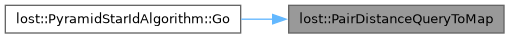
| void lost::PipelineComparatorPlotCentroidIndices | ( | std::ostream & | os, |
| const PipelineInputList & | expected, | ||
| const std::vector< PipelineOutput > & | actual, | ||
| const PipelineOptions & | ) |
Plot an annotated image where centroids are annotated with their centroid index.
For debugging. Use whatever stars were input into the star-id algo (so either actual centroids, or inputstars)
Definition at line 1412 of file io.cpp.
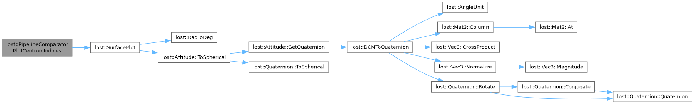
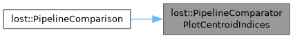
| void lost::PipelineComparison | ( | const PipelineInputList & | expected, |
| const std::vector< PipelineOutput > & | actual, | ||
| const PipelineOptions & | values ) |
Print or otherwise analyze the results of (perhaps multiple) runs of a star tracking pipeline.
Uses the command line options in values to determine which analyses to run. Examples include plotting an annotated output image to a png file, comparing the actual and expected centroids, etc
Definition at line 1704 of file io.cpp.
| Mat3 lost::QuaternionToDCM | ( | const Quaternion & | quat | ) |
Convert a quaternion to a rotation matrix (Direction Cosine Matrix).
Definition at line 355 of file attitude-utils.cpp.
Characteristic polynomial of the quest K-matrix.
Definition at line 163 of file attitude-estimators.cpp.
Derivitive of the characteristic polynomial of the quest K-matrix.
Definition at line 168 of file attitude-estimators.cpp.
| decimal lost::QuestEigenvalueEstimator | ( | decimal | guess, |
| decimal | a, | ||
| decimal | b, | ||
| decimal | c, | ||
| decimal | d, | ||
| decimal | s ) |
Approximates roots of a real function using the Newton-Raphson algorithm.
Definition at line 174 of file attitude-estimators.cpp.
| IRUnidentifiedCentroid * lost::SelectNextUnidentifiedCentroid | ( | std::vector< IRUnidentifiedCentroid * > * | aboveThresholdCentroids, |
| std::vector< IRUnidentifiedCentroid * > * | belowThresholdCentroids ) |
| SerializeContext lost::serFromDbValues | ( | const DatabaseOptions & | values | ) |
| void lost::SerializeCatalog | ( | SerializeContext * | ser, |
| const Catalog & | catalog, | ||
| bool | inclMagnitude, | ||
| bool | inclName ) |
Serialize the catalog to buffer.
Use SerializeLengthCatalog() to determine how many bytes to allocate in buffer
| inclMagnitude,inclName | See SerializeCatalogStar() |
Definition at line 107 of file star-utils.cpp.
| void lost::SerializeCatalogStar | ( | SerializeContext * | ser, |
| const CatalogStar & | catalogStar, | ||
| bool | inclMagnitude, | ||
| bool | inclName ) |
Serialize a CatalogStar into a byte buffer.
Use SerializeLengthCatalogStar() to determine how many bytes to allocate in buffer
| inclMagnitude | Whether to include the magnitude of the star. |
| inclName | Whether to include the (numerical) name of the star. |
| buffer[out] | Where the serialized star is stored. |
Definition at line 70 of file star-utils.cpp.
| void lost::SerializeKVectorIndex | ( | SerializeContext * | ser, |
| const std::vector< decimal > & | values, | ||
| decimal | min, | ||
| decimal | max, | ||
| long | numBins ) |
K-vector index layout.
No magic value because its never used on its own. | size | name | description | |------------—+---------—+----------------------------------------------------------—| | 4 | numEntries | | | sizeof decimal | min | minimum value contained in the database | | sizeof decimal | max | max value contained in index | | 4 | numBins | | | 4*(numBins+1) | bins | The `i'th bin (starting from zero) stores how many pairs of | | | | stars have a distance lesst han or equal to: | | | | min+i*(max-min)/numBins | */
apparently there's no easy way to accept an iterator argument. Hate java all you want, but at least it can do that! https://stackoverflow.com/questions/5054087/declare-a-function-accepting-generic-iterator or rather, the correct way is to use a template and just use the ++ and * operators willy-nilly, which will throw an error if the operators are not implemented.
/** Serialize a KVector index to disk. Use SerializeLengthKVectorIndex to determine how long the buffer should be.
| values | The actual entries the kvector should be referring to, sorted in ascending order. |
| min,max | Guaranteed bounds on the entries of values |
| numBins | the number of "bins" the KVector should use. A higher number makes query results "tighter" but takes up more disk space. Usually should be set somewhat smaller than (max-min) divided by the "width" of the typical query. |
| buffer[out] | index is written here. |
Definition at line 64 of file databases.cpp.
| void lost::SerializeMultiDatabase | ( | SerializeContext * | ser, |
| const MultiDatabaseDescriptor & | dbs, | ||
| uint32_t | flags ) |
| void lost::SerializePadding | ( | SerializeContext * | ser | ) |
| void lost::SerializePairDistanceKVector | ( | SerializeContext * | ser, |
| const Catalog & | catalog, | ||
| decimal | minDistance, | ||
| decimal | maxDistance, | ||
| long | numBins ) |
Serialize a pair-distance KVector into buffer.
Use SerializeLengthPairDistanceKVector to determine how large the buffer needs to be. See command line documentation for other options.
Definition at line 198 of file databases.cpp.
| void lost::SerializePrimitive | ( | SerializeContext * | ser, |
| const T & | val ) |
Definition at line 121 of file serialize-helpers.hpp.
| void lost::SerializeVec3 | ( | SerializeContext * | ser, |
| const Vec3 & | vec ) |
Serialize a Vec3 to buffer. Takes up space according to SerializeLengthVec3.
Definition at line 454 of file attitude-utils.cpp.
| Pipeline lost::SetPipeline | ( | const PipelineOptions & | values | ) |
Convert from a 3d point on the unit sphere to right ascension & declination.
Definition at line 145 of file attitude-utils.cpp.
| Quaternion lost::SphericalToQuaternion | ( | decimal | ra, |
| decimal | dec, | ||
| decimal | roll ) |
Return a quaternion that will reorient the coordinate axes so that the x-axis points at the given right ascension and declination, then roll the coordinate axes counterclockwise (i.e., the stars will appear to rotate clockwise).
This is an "improper" z-y'-x' Euler rotation.
Definition at line 100 of file attitude-utils.cpp.
Convert from right ascension & declination to a 3d point on the unit sphere.
returns unit vector
Definition at line 136 of file attitude-utils.cpp.
| StarIdComparison lost::StarIdsCompare | ( | const StarIdentifiers & | expected, |
| const StarIdentifiers & | actual, | ||
| const Catalog & | expectedCatalog, | ||
| const Catalog & | actualCatalog, | ||
| decimal | centroidThreshold, | ||
| const Stars & | expectedStars, | ||
| const Stars & | inputStars ) |
Compare expected and actual star identifications.
Useful for debugging and benchmarking.
The following description is compatible with, but more actionable than, the definitions in the documentation for StarIdComparison. A star-id is correct if the centroid is the closest centroid to some expected centroid, and the referenced catalog star is the same one as in the expected star-ids for that centroid. Also permissible is if the centroid is not the closest to any expected centroid, but it has the same star-id as another star closer to the closest expected centroid. All other star-ids are incorrect (because they are either identifying false stars, or are incorrect identifications on true stars)
The "total" in the result is just the number of input stars.
| void lost::SurfacePlot | ( | std::string | description, |
| cairo_surface_t * | cairoSurface, | ||
| const Stars & | stars, | ||
| const StarIdentifiers * | starIds, | ||
| const Catalog * | catalog, | ||
| const Attitude * | attitude, | ||
| double | red, | ||
| double | green, | ||
| double | blue, | ||
| double | alpha, | ||
| bool | rawStarIndexes = false ) |
Plot information about an image onto the image using Cairo.
Puts a box around each centroid, writes the attitude in the top left, etc.
| red,green,blue | The color to use when annotating the image. 0 represents none of that color, 1 represents that color in full. |
| alpha | The transparency of annotations. 0 is completely transparent, 1 is completely opaque. |
| rawStarIndexes | If true, print the catalog index. This is in contrast with the default behavior, which is to print the name of the catalog star. |
Definition at line 179 of file io.cpp.
| unsigned char * lost::SurfaceToGrayscaleImage | ( | cairo_surface_t * | cairoSurface | ) |
| void lost::SwapEndianness | ( | unsigned char * | buffer | ) |
Unconditionally swap the endianness of a value (uses sizeof T).
Definition at line 64 of file serialize-helpers.hpp.
| void lost::SwapEndiannessIfNecessary | ( | unsigned char * | buffer, |
| SerializeContext * | ser ) |
Swap the endianness of a value if necessary.
Uses LOST_DATABASE_{SOURCE,TARGET}_INTEGER_ENDIANNESS to determine to switch all values but decimal which uses LOST_DATABASE_{SOURCE,TARGET}_DECIMAL_ENDIANNESS.
Definition at line 74 of file serialize-helpers.hpp.
|
inline |
Definition at line 183 of file centroiders.cpp.
| const decimal lost::kAngleFrom90SoftThreshold = DECIMAL_M_PI_4 |
Definition at line 455 of file star-id.cpp.
| const int32_t lost::kCatalogMagicValue = 0xF9A283BC |
Definition at line 13 of file databases.hpp.
| const Mat3 lost::kIdentityMat3 |
3x3 identity matrix
Definition at line 344 of file attitude-utils.cpp.